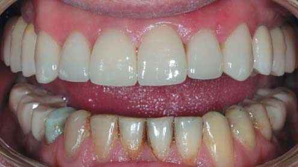

Матеріали Дентсплай Сірона · журнал «ДентАрт» 2020 №3
Фіксація непрямих реставрацій
Cementation of Indirect Restorations

Установка непрямих керамічних реставрацій — вінірів, вкладок і накладок — дуже затребувана в естетичній стоматології. Існують різні способи їх виготовлення (пошарове нанесення, пресування, фрезерування), а одним із важливих і копітких фінальних етапів є фіксація.
Вибір цементу і виду фіксації
Вибір фіксаційного цементу залежить від клінічної ситуації, виду й матеріалу реставрації. Склоіономерні цементи рекомендовані для фіксації повних коронок з гарною анатомічною ретенцією (висота кукси ≥ 4 мм, конусність < 10°): вони мають виражену вологостійкість, тому придатні для під'ясенного препарування з глибоким зануренням краю під ясна, але не мають високих естетичних властивостей. Для фіксації керамічних накладок, вкладок, вінірів і коронок з неретенційним типом препарування (висота кукси < 4 мм, конусність > 10°) потрібні спеціальні композитні цементи з адгезивними системами.


Підготовка перед цементуванням
На успіх фіксації впливають змочуваність поверхонь, їх конгруентність і товщина фіксаційного матеріалу: чим менша товщина цементу, тим міцніша й довговічніша фіксація. Змочуваність поліпшують шліфуванням препарованих поверхонь борами із зернистістю 30 мкм, дисками й головками системи Enhance. Керамічні реставрації товщиною 1 мм і більше (а тим більше опакові) перешкоджають проникненню світла лампи — тому перевагу віддають композитним цементам подвійного способу затвердіння, здатним самополімеризуватися за недостатньої кількості світла.
- світлозатверджувальні адгезиви й композити повинні отримувати достатню енергію світла — товщина реставрації не має перешкоджати його проникненню;
- при значній втраті потужності світлового потоку збільшення часу полімеризації не компенсує його втрату;
- для товстих реставрацій слід використовувати композитні цементи подвійного способу затвердіння («темна» фаза полімеризації);
- бажано використовувати рекомендовані комбінації адгезивних систем і композитних цементів для сумісності.
Протокол фіксації та матеріали Calibra
Для адгезивної фіксації застосовують систему матеріалів Calibra (Dentsply Sirona): Calibra Universal — цемент подвійного затвердіння для фіксації коронок; Calibra Ceram — адгезивний композитний цемент; Calibra Veneer — світлозатверджувальний композит для вінірів; разом з універсальною адгезивною системою Prime&Bond universal. Внутрішню поверхню керамічної реставрації протравлюють плавиковою кислотою, очищають ортофосфорною, силанізують і покривають адгезивом; після позиціонування ретельно видаляють надлишки цементу.


Клінічні приклади
Наведені клінічні випадки демонструють адгезивну фіксацію керамічних реставрацій матеріалами Calibra: у пацієнтки А зафіксовано керамічні вініри на зуби 12, 11, 21, 22 (кераміка CELTRA PRESS, Calibra Veneer), а в пацієнта К проведено тотальну реабілітацію з коронками й вінірами на верхній щелепі.




Висновки
Вибір фіксаційного матеріалу й протоколу цементування визначається клінічною ситуацією, видом препарування й типом реставрації. Композитні цементи подвійного способу затвердіння з відповідними адгезивними системами забезпечують міцну й довговічну адгезивну фіксацію непрямих керамічних реставрацій навіть за неретенційного препарування, за умови дотримання адгезивного протоколу й контролю потужності полімеризаційної лампи.